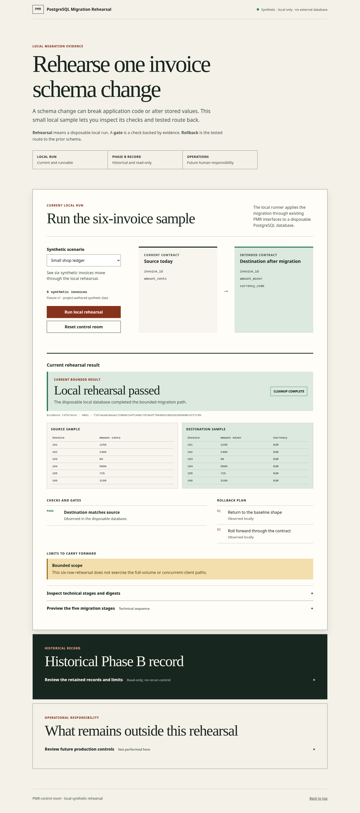

Before
invoices.amount_cents
One integer amount field in the source invoice shape.
PostgreSQL Migration Rehearsal · Database changes
Interactive demo · Fictional data · Full tool runs locally
Follow an invoice migration through five stages, inspect the checks and see the rollback route. The demo shows a prepared report, without changing a database.
Interactive prepared preview
All values are fictional. This guided report runs only in the browser and never starts PostgreSQL, Docker, a database, or a migration.
The opt-in PMR-DEMO-20260908-v1 CLI completed a new six-invoice rehearsal, rollback and cleanup after two matching image builds. It preserves the frozen browser reference and does not replay Phase B. Baseline source and instructions.
The original browser environment is not yet fully reproducible. The new CLI baseline does not resolve that historical limitation. Technical reference: LOW02 remains open for browser binaries and supporting system libraries.
The interface starts, but a fresh PostgreSQL image build is rejected by the runtime integrity check. The recorded successful rehearsal below is historical evidence from the prepared local environment; it is not proof that a fresh clone can run the engine. The required image identity and browser-dependency provenance remain open.
invoices.amount_cents
One integer amount field in the source invoice shape.
invoices.amount_minor
invoices.currency_code
Invoice IDs and values remain visible while the shape changes.

The primary example is a six-invoice synthetic local run. It is distinct from the historical 4,096-row development demonstration. Historical Phase B is a frozen, one-shot record with no browser run control and is not rerun here.
A deliberately invalid synthetic scenario is rejected before database work. A deterministic error fixture shows that an unconfirmed cleanup blocks another run; it is not evidence of a failed real migration.
uv sync --frozen
npm ci --ignore-scripts
npm run control-room:start
npm run control-room:stop
Prerequisites are the project Python environment, exact Node dependencies installed with npm ci, Docker's local default socket, and the already-present frozen PostgreSQL image. Then open the loopback control room at http://127.0.0.1:8787. Do not expose the engine online.